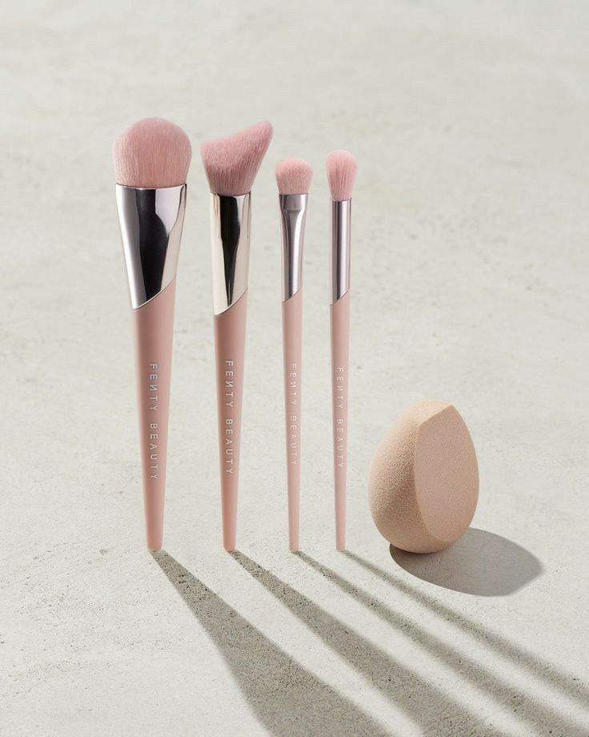
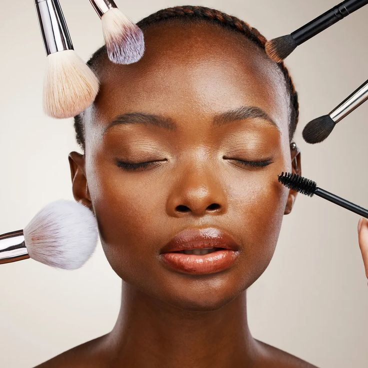

Learn skincare and makeup techniques for healthy glowing skin.
Healthy skin begins with proper hydration and daily skincare. Using moisturizers and drinking enough water helps maintain smooth, glowing and healthy-looking skin throughout the day.
Before applying makeup, it is important to cleanse and prepare the skin properly to achieve a flawless and long-lasting finish. Hydrated skin also helps makeup products blend more evenly.

Cleaning makeup brushes regularly improves makeup application and prevents dirt or bacteria from building up on the skin. Clean tools help maintain better skin health and smoother makeup results.
Professional makeup artists recommend washing brushes frequently to avoid skin irritation and to improve the quality of foundation, powder and eyeshadow application.

Blending makeup correctly creates a soft and natural appearance. Foundation, contour and eyeshadow should blend smoothly into the skin to avoid harsh lines and uneven texture.
Using beauty sponges and quality brushes can help achieve professional makeup results while enhancing the overall beauty and confidence of the user.